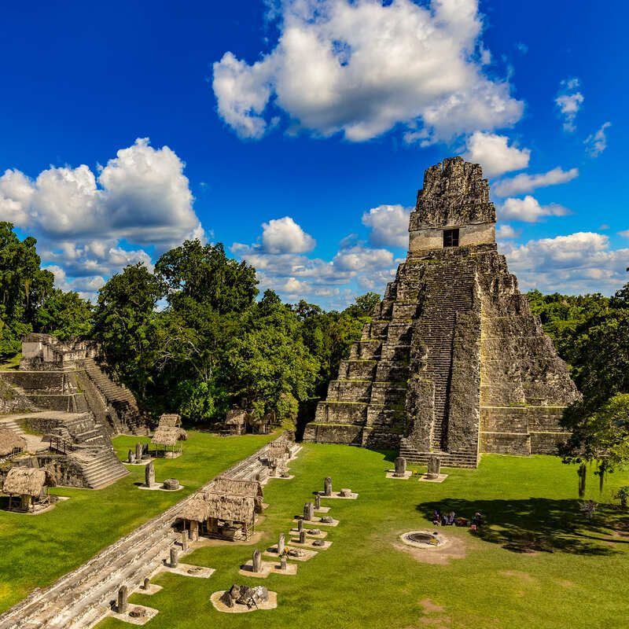

Sumérgete en el corazón de la selva petenera para descubrir Tikal, una de las ciudades más grandes y poderosas de la civilización maya. Sus imponentes pirámides se elevan sobre las copas de los árboles, creando un paisaje que te transportará a otra era.
Curiosidades fascinantes
- Escenario de Película: Tikal fue utilizado como locación para filmar la base rebelde "Yavin 4" en la película Star Wars: Episodio IV - Una Nueva Esperanza (1977).
- El Sonido de la Selva: La reserva es hogar de una increíble biodiversidad. Es común escuchar el estruendo de los monos aulladores y ver tucanes, monos araña y coatíes entre las ruinas.
- Vistas desde las Alturas: Es posible escalar el Templo IV, una de las estructuras precolombinas más altas de América, para presenciar un amanecer o atardecer inolvidable sobre un mar de selva.
Un poco de historia
Tikal alcanzó su máximo esplendor entre los años 200 y 900 d.C., dominando gran parte del mundo maya política, económica y militarmente. Fue la gran rival de Calakmul, y su historia está llena de alianzas y conflictos. La ciudad fue abandonada misteriosamente a finales del siglo IX, y la selva la reclamó durante casi mil años hasta su redescubrimiento.